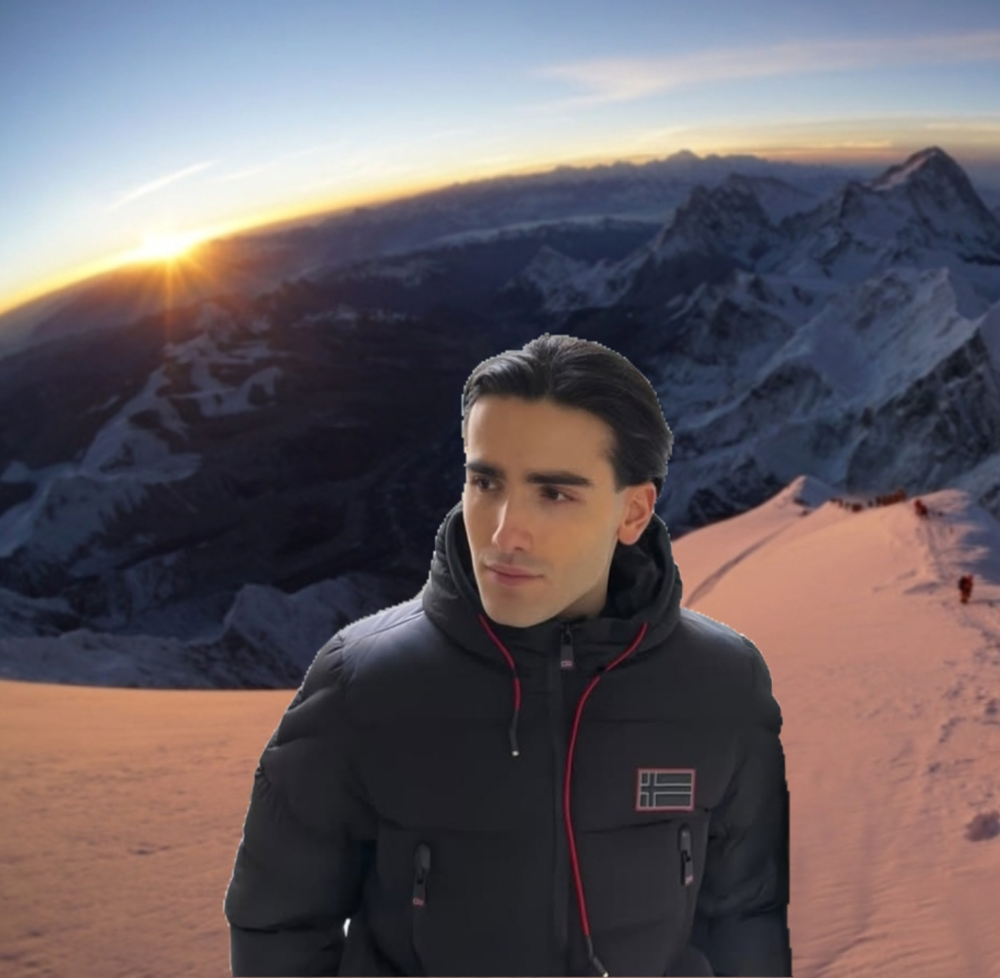

Valentino Bellavita, nato a Firenze, ha conquistato la vetta più alta del mondo con determinazione e preparazione, diventando il più giovane italiano a riuscirci. Aveva solo 24 anni quando ha raggiunto gli 8.848 metri dell’Everest, portando con sé non solo il tricolore, ma anche una promessa fatta a se stesso da bambino: non fermarsi mai davanti alla paura.
L'impresa ha richiesto mesi di allenamento ad alta quota, una preparazione mentale intensa e una squadra internazionale con cui ha affrontato condizioni meteorologiche estreme. Il tutto documentato solo in parte, perché Valentino non ama mettersi in mostra: ha raccontato l’esperienza solo in un'intervista concessa mesi dopo, con la naturalezza di chi vive le sfide come un percorso personale.
“Non lo faccio per dimostrare qualcosa a qualcuno,” ha detto. “Scalo per capire fin dove posso arrivare.”
Durante l’ascensione finale, iniziata poco dopo le tre del mattino, il gruppo ha affrontato venti fortissimi e temperature vicine ai -30°C. Valentino è stato tra i pochi a non mostrare segni di cedimento, incoraggiando anche altri membri della spedizione a proseguire. Un comportamento che, secondo le guide locali, ha fatto la differenza nella riuscita della missione.
La scalata ha attirato l’attenzione di appassionati di montagna e media nazionali, che hanno seguito passo dopo passo il viaggio di Valentino verso la cima del mondo. Tuttavia, il protagonista si è defilato dai riflettori poco dopo il rientro: niente conferenze, niente apparizioni. Solo qualche parola pubblicata sul suo profilo personale: “A volte la vetta è più dentro che fuori.”